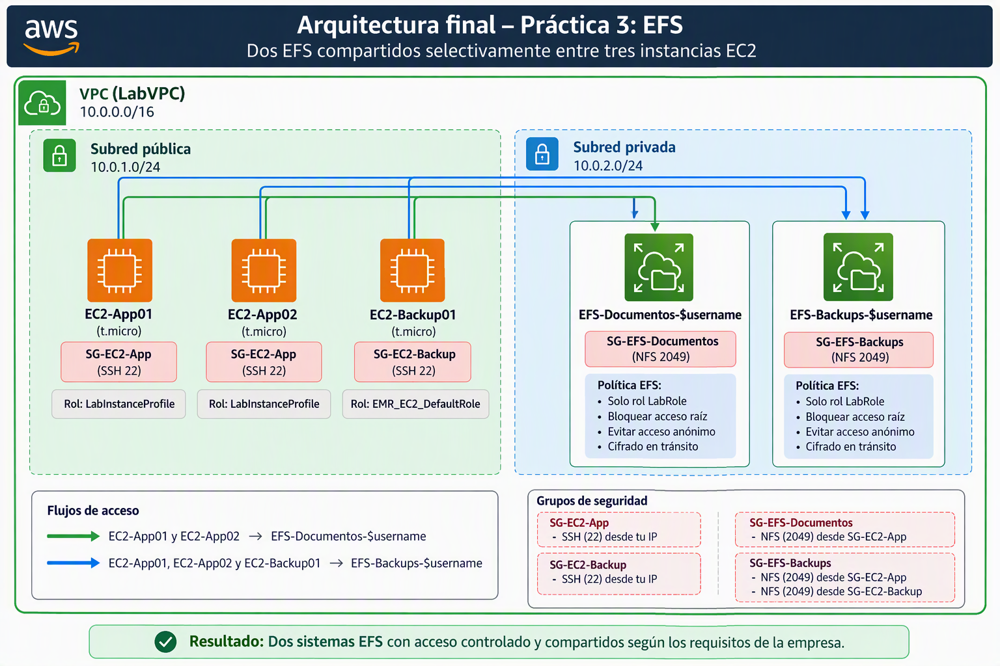

Creación de dos EFS compartidos selectivamente entre tres instancias EC2
Leer antes de empezar la práctica
Esta práctica puede conllevar unos costes elevados ya que EFS no es un servicio barato y además se montarán 3 máquinas EC2. Es por ello que hemos habilitado un laboratorio especial para ella y así poder aislar estos costes. El laboratorio habilitado para hacer esta práctica se llama "Laboratorio UD3: Práctica 3". Está habilitado desde el 15 de Noviembre hasta más allá de la fecha de finalización de la práctica.
Esta práctica está programada para las primeras semanas tras la vuelta de navidad. Podéis empezar la práctica antes si queréis. Recordad que durante el periodo no lectivo no estaré disponible para la tutorización.
Como es una práctica en la que se trabaja mucho contenido y que puede llevar bastante tiempo, se ha puesto un plazo de entrega amplio. Os recomiendo encarecidamente que aprovechéis el plazo y no la dejéis para la última semana.
Situación empresarial
La empresa DataVision Consulting desarrolla aplicaciones para entidades financieras y necesita centralizar la información compartida entre sus servidores.
La infraestructura está compuesta por tres instancias EC2:
| Instancia | Función |
|---|---|
EC2-App01 |
Aplicación principal |
EC2-App02 |
Aplicación secundaria y procesamiento |
EC2-Backup01 |
Servidor de backups y recuperación |
La empresa tiene dos necesidades de almacenamiento claramente diferenciadas:
EFS-Documentos-$username
Se utilizará para almacenar:
- Manuales técnicos.
- Procedimientos internos.
- Documentación de proyectos.
- Informes compartidos.
Este almacenamiento solo debe ser accesible desde:
EC2-App01EC2-App02
El servidor de backups no necesita acceder a esta información.
EFS-Backups-$username
Se utilizará para almacenar:
- Copias de seguridad de aplicaciones.
- Exportaciones de bases de datos.
- Ficheros de recuperación.
Este almacenamiento debe ser accesible desde:
EC2-App01EC2-App02EC2-Backup01
Objetivos
Al finalizar la práctica deberás ser capaz de:
✅ Crear dos sistemas de archivos EFS.
✅ Configurar los permisos de acceso mediante Security Groups.
✅ Montar un EFS en dos servidores y otro EFS en tres servidores.
✅ Verificar la compartición de datos.
✅ Automatizar los montajes mediante fstab.
Arquitectura final

Fase 0: Crear LabVPC
Utiliza el script que existe en la página Introducción para crear una VPC con subredes pública y privada. Todas las máquinas EC2 y Sistemas EFS se montarán en esta VPC.
Revisa también en la parte de Introducción que texto debes poner en vez de $username.
Fase 1: Crear las instancias EC2
Crear tres instancias Amazon Linux 2023:
-
EC2-App01 -
EC2-App02 -
EC2-Backup01
Con estas características
-
AMI: Amazon Linux más actual que sea Apta para la capa gratuita
-
Instancia t{x}.micro de capa gratuita más actual
-
Utiliza el par de claves vockey
-
Establece la máquina EC2 en la VPC
LabVPC, subredPublicSubnet. Sin preferencia de AZ. -
Asignación automática de IP pública: Habilitar
-
Deja el almacenamiento y el resto de parámetros por defecto y pulsa el botón Lanzar instancia.
-
Asocia:
-
A las máquinas
EC2-App0xel rolLabInstanceProfile -
A la máquina
EC2-Backup01el rolEMR_EC2_DefaultRole.
En un entorno real crearíamos un rol para las máquinas con acceso a documentos y otro para la que sólo va a tener acceso a la parte de backup pero los laboratorios de AWS no nos dejan crear roles por lo que tenemos que conformarnos con los predefinidos.
- Par de claves
vockey.
Fase 2: Configurar Security Groups
Paso 1. Crear SG-EC2-App
Asignar a:
-
EC2-App01 -
EC2-App02
Permitir:
| Tipo | Puerto |
|---|---|
| SSH | 22 |
Paso 2. Crear SG-EC2-Backup
Asignar a:
EC2-Backup01
Permitir:
| Tipo | Puerto |
|---|---|
| SSH | 22 |
Paso 3. Crear SG-EFS-Documentos
Siguiendo la siguiente guía.
Permitir:
| Tipo | Puerto |
|---|---|
| NFS | 2049 |
Origen:
SG-EC2-App
De esta forma únicamente las instancias EC2-App01 y EC2-App02 podrán montar este EFS.
Paso 4. Crear SG-EFS-Backups
Permitir:
| Tipo | Puerto |
|---|---|
| NFS | 2049 |
Origen:
SG-EC2-App
SG-EC2-Backup
Con esta configuración, las tres máquinas tendrán acceso.
Fase 3: Crear los sistemas EFS
Paso 5. Crear EFS-Documentos-$username
Paso 1:
- Nombre:
EFS-Documentos-$username - Deshabilita las copias de seguridad automáticas para evitar cargos adicionales
Resto de parámetros por defecto
Paso 2:
- Elegimos nuestra VPC
LabVPCy como subredPrivateSubnetevitando así que máquinas de fuera de AWS puedan acceder a nuestro EFS. - Sólo usamos ipv4
- Asociamos el grupo de seguridad
SG-EFS-Documentos. Con esto securizamos a nivel de conexión el EFS
Paso 3:
Vamos a seguir las recomendaciones de seguridad para proteger un sistema EFS. Para ello vamos a marcar las siguientes opciones:
-
Impedir el acceso raíz por defecto
-
Evitar el acceso anónimo
-
Aplicar el cifrado en tránsito para todos los clientes
Se nos creará una política JSON. Esta política va a permitir conectarse a cualquier instancia que no sea anónima pero nosotros sólo queremos que se puedan conectar las instancias EC2 con el Rol de IAM asociado LabInstanceProfile. Para conseguir esto tenemos que modificar el json generado en el statement que cuyo action es elasticfilesystem:ClientWrite y tiene una condición booleana llamada elasticfilesystem:AccessedViaMountTarget con valor true. En esa política veremos que el Principal (a quién aplica esta política) será algo similar a esto:
"Principal": {
"AWS": "*"
}
Deberemos cambiarlo por el ARN del Rol IAM que está contenido dentro de LabInstanceProfile.

Para conocer ese ARN, abrimos la consola EC2 y escribimos el comando:
aws sts get-caller-identity
Nos devolverá un resultado parecido a éste:
{
"UserId": "AROAZKKMNFFGGZLH45IBB:i-0b15f0dfd746aa0d1",
"Account": "640647244108",
"Arn": "arn:aws:sts::640647244108:assumed-role/LabRole/i-0b15f0dfd746aa0d1"
}
Ese ARN es un ARN temporal de STS. Si reiniciamos la consola o accedemos desde otro equipo, veremos que posiblemente el ARN haya variado. Revisa el documento "ARN temporal de STS frente al ARN del rol IAM en EC2 y EFS" para entender las implicaciones antes de seguir.
El nombre de un ARN temporal de STS sigue el siguiente formato:
arn:aws:sts::<cuenta>:assumed-role/<nombre-Rol>/<Sesion-i>
Por lo tanto de este ejemplo podemos asumir:
-
Cuenta: 640647244108
-
Rol:
LabRole -
Sesión-i: i-0b15f0dfd746aa0d1
El ARN permanente del rol LabRole sería el siguiente:
arn:aws:iam::640647244108:role/LabRole
Ese el ARN que deberemos pegar en nuestra política quedando dicha política así (hemos modificado la línea 9):
{
"Version": "2012-10-17",
"Id": "efs-policy-wizard-b03eb5c8-3637-4ff2-b023-8223d07bcef1",
"Statement": [
{
"Sid": "efs-statement-solo-labrole",
"Effect": "Allow",
"Principal": {
"AWS": "arn:aws:iam::640647244108:role/LabRole"
},
"Action": "elasticfilesystem:ClientWrite",
"Resource": "arn:aws:elasticfilesystem:us-east-1:640647244108:file-system/fs-00a7abbeaf2dc7551",
"Condition": {
"Bool": {
"elasticfilesystem:AccessedViaMountTarget": "true"
}
}
},
{
"Sid": "efs-statement-6917ef70-df8f-46db-8e1d-1c70e5e8844b",
"Effect": "Deny",
"Principal": {
"AWS": "*"
},
"Action": "*",
"Resource": "arn:aws:elasticfilesystem:us-east-1:640647244108:file-system/fs-00a7abbeaf2dc7551",
"Condition": {
"Bool": {
"aws:SecureTransport": "false"
}
}
}
]
}
Esta política sigue teniendo un problema, cualquier Rol podrá montar el sistema de ficheros. Para evitar esto, vamos a añadir el permiso elasticfilesystem:ClientMount dentro de esta política (se ha añadido en la línea 13). Así sólo las máquinas con el Rol LabRole (o un instance profile que lo contenga como LabInstaceProfile) podrán montar este volumen en una máquina EC2.
La política que quedará será parecida a esta (haz las modificaciones comentadas sobre la tuya ya que esta no funcionará si la copias y pegas directamente)
{
"Version": "2012-10-17",
"Id": "efs-policy-wizard-b03eb5c8-3637-4ff2-b023-8223d07bcef1",
"Statement": [
{
"Sid": "efs-statement-solo-labrole",
"Effect": "Allow",
"Principal": {
"AWS": "arn:aws:iam::640647244108:role/LabRole"
},
"Action": [
"elasticfilesystem:ClientWrite",
"elasticfilesystem:ClientMount"
],
"Resource": "arn:aws:elasticfilesystem:us-east-1:640647244108:file-system/fs-00a7abbeaf2dc7551",
"Condition": {
"Bool": {
"elasticfilesystem:AccessedViaMountTarget": "true"
}
}
},
{
"Sid": "efs-statement-6917ef70-df8f-46db-8e1d-1c70e5e8844b",
"Effect": "Deny",
"Principal": {
"AWS": "*"
},
"Action": "*",
"Resource": "arn:aws:elasticfilesystem:us-east-1:640647244108:file-system/fs-00a7abbeaf2dc7551",
"Condition": {
"Bool": {
"aws:SecureTransport": "false"
}
}
}
]
}
Con estas políticas hemos conseguido los siguiente:
- El acceso debe realizarse a través de un Mount Target (
AccessedViaMountTarget). - El tráfico debe ir cifrado (
tls). - El cliente debe autenticarse mediante IAM (
iam). - El principal autenticado debe ser el rol
LabRole. - El rol tiene permisos de montaje (
ClientMount) y escritura (ClientWrite).
Una cosa que tenemos que tener en cuenta. Cuando usemos una máquina EC2 que asuma el Rol LabRole, vamos ver que tenemos el permiso elasticfilesystem:ClientRootAccess. Podemos comprobarlo creando un fichero con sudo y viendo que el dueño del archivo es root:root. En un sistema sin root squashing el usuario sería nobody.
¿Por qué podemos actuar como root (no_root_squashing) pese a no dar el permiso en el recurso?
Según la documentación de red y permisos de Amazon EFS, por defecto, el "root squashing" está desactivado (no_root_squash).
Esto significa que Amazon EFS trata nativamente a cualquier usuario con UID 0 (root) como el usuario administrador raíz y se salta las comprobaciones de permisos.
Para activar el root squashing (es decir, degradar al usuario root a un usuario anónimo sin privilegios), debemoss quitarle explícitamente el permiso elasticfilesystem:ClientRootAccess.
| Configuración en el Servidor | Usuario en el Cliente | UID enviado | UID con el que se escribe en el Servidor | ¿Tiene control total? |
|---|---|---|---|---|
root_squash (Por defecto en NFS estándar) |
root |
0 |
65534 (nobody) |
No, se le trata como un usuario invitado sin privilegios. |
no_root_squash (Por defecto en AWS EFS) |
root |
0 |
0 (root) |
Sí, tiene acceso total como superusuario en el servidor. |
En realidad, al menos para un primer acceso en el que creemos estructuras de carpeta y asociemos permisos, es necesario tener acceso root ya que en el directorio / del EFS el usuario root es el propietario del recurso montado. Vamos a provechar esto cuando montemos por primera vez los EFS para crear las estructuras de carpetas y luego denegaremos explíticamente el root squashing.
Existe algunas casuísticas muy contadas no es necesario habilitar el root squashing pero en la mayoría de sistemas la recomendación es habilitarlo por defecto.
Fase 4: Instalar amazon-efs-utils
En las tres EC2:
sudo yum install -y amazon-efs-utils
Fase 5: Montar EFS-Documentos-$username
¿Qué máquinas se pueden conectar a EFS-Documentos-$username?
-
Cuando creamos el punto de acceso del EFS asociamos el grupo de seguridad
SG-EFS-Documento. -
En las políticas del EFS hemos establecido:
{
"Sid": "efs-statement-dc4dd5c9-1532-47de-8772-f2220a8bfffe",
"Effect": "Allow",
"Principal": {
"AWS": "arn:aws:iam::640647244108:role/LabRole"
},
"Action": [
"elasticfilesystem:ClientWrite",
"elasticfilesystem:ClientMount"
],
"Resource": "arn:aws:elasticfilesystem:us-east-1:640647244108:file-system/fs-0c4e49d543c970398",
"Condition": {
"Bool": {
"elasticfilesystem:AccessedViaMountTarget": "true"
}
}
}
Por lo tanto sólo nos podremos conectar desde máquinas cuyo SG sea SG-EC2-App y que además tengan el Rol LabRole. En nuestra práctica esto lo cumplen las máquinas EC2-App01 y EC2-App02.
En EC2-App01 y EC2-App02
Monta la carpeta raíz del EFS-Documentos-$username en las máquinas EC2-App01 y EC2-App02.
Fíjate en el punto 3.1 de este tutorial para obtener el nombre DNS del sistema EFS-Documentos-$username. Como usamos amazon-efs-utils también podrías poner sólo el ID del EFS. Fíjate que en comando añadimos -o tls,iam para obligar a usar TLS en la conexión y enviar los datos del Rol IAM asociado a la instancia.
Ten en cuenta que si acabas de crear el sistema EFS es posible que tengas que esperar varios minutos para que el comando
mountfuncione incluso aunque en la consola se muestre el sistema EFS comodisponible. Eso se debe a que las resoluciones DNS tardan varios minutos en propagarse.
# Crear directorio:
sudo mkdir /documentos
#Montar:
sudo mount -t efs -o tls,iam fs-id:/ /documentos
#Comprobar: Debemos ver una entreada montada en /documentos
df -h
Creación de carpetas en EFS-Documentos-$username y asignación de permisos a las mismas.
Desde el equipo Ec2-App01, vamos a crear una carpeta compartida con lectura y escritura para todo el mundo y una carpeta documentacion con permisos de solo lectura para todos los usuarios y de lectura escritura para el usuario local documentador que crearemos y que tendrá permisos totales sobre ella. En un entorno real el usuario documentador debería ser un usuario de un AD o LDAP corporativo.
Además vamos a crear una carpeta compartida en la que cualquier usuario pueda leer y escribir.
# Creamos a documentador y le establecemos un password
sudo adduser documentador
sudo passwd documentador
# Creamos la carpeta como su (/documentos tiene como propietario a
# documentador:documentador y sólo el propietario puede escribir en ella)
sudo mkdir /documentos/documentacion
sudo chown documentador:documentador /documentos/documentacion
# Creamos la carpeta compartida y le damos permisos 777 para que todo
# el mundo pueda leer y escribir en ella
sudo mkdir /documentos/compartida
sudo chmod 777 /documentos/compartida
Prueba de funcionamiento
Con usuario ec2-user en máquina Ec2-App01
echo "Manual de despliegue"" > /documentos/compartida/manual.txt
# Listamos para comprobar que se ha creado el documento
ls -l /documentos/compartida
# Intentamos crear un fichero en documentacion, se espera error de permisos
echo "Manual infraestructura" /documentos/documentacion/infraestructura.txt
# Cambiamos al usuario documentador y creamos el fichero infraestructura y
# el documento arquitectura
su documentador
echo "Manual infraestructura" > /documentos/documentacion/infraestructura.txt
echo "Manual arquitectura" > /documentos/documentacion/arquitectura.txt
# Comprobamos que se han creado los ficheros
ls -l /documentos/documentacion
Ahora iniciamos sesión con el usuario ec2-user en la máquina Ec2-App02
# Comprobamos que existen los ficheros de la carpeta compartida
# en modo lectura
ls -l /documentos
Veremos que están la carpeta compartida con propietario root:root y la carpeta documentacion con usuario y grupo numérico. Esto es porque al ser un usuario local de la máquina Ec2-App01, no tiene la información de dicho usuario. En un entorno de Sistema en red tipo LDAP o AD veríamos correctamente el nombre.
Mostramos el contenido del fichero /documentos/compartida/manual.txt y que también podemos leer el fichero /documentos/documentacion/infraestructura.txt
cat /documentos/compartida/manual.txt
cat /documentos/documentacion/infraestructura.txt
Vemos que nos muestra el contenido de los ficheros sin problema.
Ahora intentaremos crear un fichero en la subcapeta documentacion y obtendremos error:
touch /documentos/documentacion/test-permisos.txt
Sin embargo si intentamos crear ese mismo fichero con sudo nos va a dejar
sudo touch /documentos/documentacion/test-permisos.txt
¿Por qué hemos podido crear un fichero en una carpeta de sólo lectura?
Al estar activado el no_root_squashing, cualquier root de una máquina local puede trabajar como root en las carpetas EFS. Esto implica que un usuario malicioso o un sistema infectado **podría cambiar permisos, cambiar propietarios o modificar y borrar el contenido de nuestro sistema de ficheros. Cuando trabajemos con EFS o con cualquier sistema NFS tenemos que evaluar si esta característica es necesario en nuestra implementación.
La recomendación habitual es habilitar el root_squashing.
Habilitar root_squashing en EFS-Documentos-$username
Si todas las pruebas funcionaron correctamente, podemos suponer que ya tenemos la estructura de carpetas montadas para nuestro sistema y podemos proceder a cerrar el acceso root squashing. Para ello bastaría con añadir la siguiente política al EFS modificando el Resource por el ARN de nuestro EFS-Documentos-$username:
{
"Sid": "ForzarRootSquashExplicito",
"Effect": "Deny",
"Principal": "*",
"Action": "elasticfilesystem:ClientRootAccess",
"Resource": "arn:aws:elasticfilesystem:us-east-1:640647244108:file-system/fs-0c4e49d543c970398"
}
Una vez añadida la política, desmontamos y montamos de nuevo el EFS y veremos que, si ahora queremos crear un el fichero /documentos/documentacion/nuevo-test-permisos.txt utilizando al superusuario con sudo, vamos a tener un error de permisos. Ejemplo del comando:
sudo touch /documentos/documentacion/nuevo-test-permisos.txt
La carpeta compartida tenía permisos 777 por lo que vamos a poder crear ficheros en ella como root. Fíjate también que si creamos un fichero en la carpeta y luego listamos el contenido:
# Creamos el fichero
sudo touch /documentos/compartida/test-root-compartida.txt
# Listamos el contenido de /documentos/compartida
ls -l /documentos/compartida
¿Qué usuario aparece como propietario del fichero /documentos/compartida/test-root-compartida.txt? Debería aparecer como nobody. Explicación.
Validación de seguridad
Vamos a intentar montar EFS-Documentos-$username desde EC2-Backup01
sudo mkdir /documentos
sudo mount -t efs fs-DOCUMENTOS:/ /documentos
¿Pudiste montar la carpeta? ¿Cuál es el motivo? Explica qué cambios habría que hacer para que se pudiera realizar el montaje respuestaQ1.txt
Fase 6. Crear EFS-Backups-$username
Una vez realizados los pasos anteriores, vais a realizar de forma autónoma el resto de la implementación. Además de las fuentes que consideréis oportunas, podéis ayudaros de la documentación oficial y de los pasos realizados con anterioridad para crear EFS-Documentos-$username y montarlo en las máquinas cliente. Cuando en el nombre de una captura se ponga .ext quiere decir que será la extensión propia de la captura (Usualmente jpg o png)
Implementaciones a realizar:
- Crear
EFS-Backups-$username -
VPC
LabVPC, subredPrivateSubnet. -
El destino de montaje tendrá como SG asociado
SG-EFS-Backupspara permitir las conexiones tanto de las máquinas EC2-App0x como de la máquina EC2-Backup01. -
Las políticas de seguridad serán las siguientes:
-
El acceso debe realizarse a través de un Mount Target (
AccessedViaMountTarget). -
El tráfico debe ir cifrado (
tls). -
El principal autenticado debe ser el rol
LabRoleoEMR_EC2_DefaultRole. -
Ambos roles tienen permisos de montaje (
ClientMount) y escritura (ClientWrite). - Montar
EFS-Backups-$usernameenEC2-App01. Asegúrate de que también tienes montadoEFS-Documentos-$usernameen/documentosen esta máquina antes de realizar las tareas: - Creamos carpeta /backups en la máquina
- Montamos la raíz de EC2-backup01 en /backups
- Una vez montada creamos la siguiente estructuras de carpetas:
- /backups/ec2-user Propietario ec2-user:ec2-user permisos 700
- /backups/general Propietario root:root permisos 777
- Una vez comprobados los permisos activamos
no_root_squashing - Como usuario ec2-user creamos los ficheros file1.txt, file2.txt en
/backups/ec2-user. Hacemos captura del comandols -l /backups/ec2-user. Nombre del fichero01-ec2-user-ls-b-ec2.ext - Nos pasamos al usuario
documentadore intentamos hacerls -l /backups/ec2-user. Captura de la salida del comando. Nombre fichero:02-documentador-ls-b-ec2.ext - También como documentador, creamos los ficheros
documentador1.txtydocumentador2.txtdentro la carpeta/backups/general/documentadorque habremos creado previamente. Captura de la salida del comandols -l /backups/general/documentador. Nombre del fichero03-documentador-ls-general.ext - Ejecutamos el comando
sudo touch /backups/ec2-user/root-file.txt. Captura de la salida del comando. Nombre del fichero04-root-create-file-ec2.ext - Ejecutamos el comando
sudo touch /backups/general/root-file.txt. Captura de la salida del comando. Nombre del fichero05-root-create-file-general.ext - Ejecuta el comando
df -hCaptura de la salida del comando. Nombre del fichero06-df-App01.ext - (Opcional) Modifica
/etc/fstabpara que ambos EFS se monten automáticamente cuando arrancamos el equipo. Si se hace adjuntar captura de comandocat /etc/fstab. Nombre del archivo:99-Opc-fstab.ext - Montar
EFS-Backups-$usernameenEC2-App01. Asegúrate de que también tienes montadoEFS-Documentos-$usernameen/documentosen esta máquina antes de realizar las tareas: - Creamos carpeta /backups en la máquina
- Montamos la raíz de EC2-backup01 en /backups
- Ejecuta el siguiente comando:
ls -l /backups. Captura de la salida del comando. Nombre del fichero10-backups-ls.ext - Ejecuta el siguiente comando:
ls -l /documentos. Captura de la salida del comando. Nombre del fichero11-documentos-ls.ext - Montar
EFS-Backups-$usernameenEC2-Bck01: - Creamos carpeta /backups en la máquina
- Montamos la raíz de EC2-backup01 en /backups
- Ejecuta el siguiente comando:
ls -l /backups. Captura de la salida del comando. Nombre del fichero20-backups-ls.ext
-
Formato entrega
Fichero zip con nombre practicaUd3-$username.zip. Contenido:
-
Carpeta
capturas: Con las capturas del paso 6 -
Fichero políticas-efs-documentos.json con el contenido de las políticas del servidor EFS-Documentos-$username.
-
Fichero politicas-efs-backup.json con el contenido de las políticas del servidor
EFS-Backups-$username. -
Carpeta SG. Con las siguientes capturas de los siguientes Security Groups:
-
Captura de listado completo de reglas seguridad. Nombre del fichero:
listado-SG.ext -
Captura de las reglas de entrada de
SG-EC2-App. Nombre de fichero:SG-EC2-App.ext -
Captura de las reglas de entrada de
SG-EC2-Backup. Nombre de fichero:SG-EC2-Backup.ext -
Captura de las reglas de entrada de
SG-EFS-Backup. Nombre de fichero:SG-EFS-Backup.ext -
Captura de las reglas de entrada de
SG-EFS-Documentos. Nombre de fichero:SG-EFS-Documentos.ext -
Fichero
respuestaQ1.txt